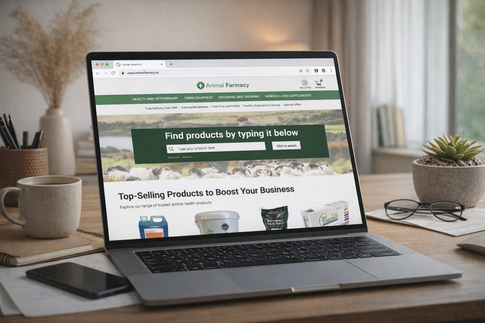

Animal Farmacy Homepage Redesign
This case study is based on a real-world client project where I was asked to improve the user experience of an e-commerce platform. During research I discovered that the average age of their users was 57+ — a demographic with specific digital literacy needs that the site was not designed to support. Users couldn't find what they needed, couldn't navigate confidently, and the site fell short of accessibility standards that would make it usable for this audience.
My focus was on redesigning the homepage to prioritise accessible navigation, an intuitive and visible search tool, and a clearer information architecture that matched how users actually think about farm products.


Hidden Search & Navigation
Users couldn't find the search bar. 40% of older users didn't recognise the magnifying glass icon — the only search entry point on the page.
Confusing Information Architecture
Product categories were too broad, mislabelled, and illogically grouped — causing users to rely on scrolling and trial-and-error instead of searching.
Poor Accessibility
Text was too small, buttons too compact, and colour contrast failed WCAG standards — all critical issues for users aged 57+.